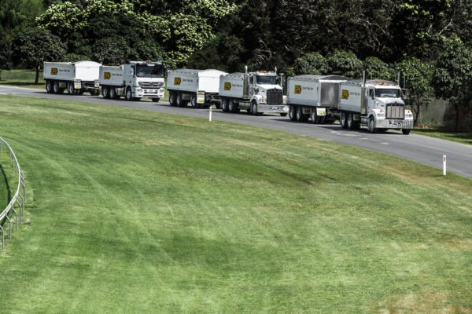

Our Work on the Pacific Motorway M1/M3/Gateway Mergel
The Pacific Motorway M1/M3/Gateway merge is a $190 million Queensland motorway upgrade, part of the larger Pacific Motorway Upgrade Master Plan. The upgrade covers major upgrades for the Pacific Motorway between Eight Mile Plains and Rochedale South, around exit 19. This upgrade ties into the major works taking place throughout the Gold Coast through the Pacific Motorway M1 Upgrade Program. The M1 is one of Australia’s busiest highways and is a national freight route, the upgrade and widening will allow the motorway to support a much higher capacity of vehicles into the future.
The merge of the two major motorways has long been known as the start of congestion when driving south of Brisbane to the Gold Coast in the afternoon. However, the new layout of the road is designed to ensure traffic flows by relieving pressure on the most congested areas. Avalon Industries has been fortunate to be involved in such a unique project, where our fleet of trucks and plant continue to be utilised across project activities. Whether it’s hauling material or compacting the road, our equipment has been out on the project, helping get the job done right and on time.
The Pacific Motorway M1/M3/Gateway Merge project facilitates the upgrade of:
- 5 southbound lanes between Eight Mile Plains and Rochedale South (Exit 19)
- Relocation of existing bus entry from Eight Mile Plains Bus Station onto to Pacific Motorway
- Replacement of the Underwood Road bridge to a new 4 lane overpass
- Installation of new motorway technologies between Klumpp Road and Rochedale Road
The Pacific Motorway M1/M3/Gateway merge has been running over capacity in the afternoon for a number of years and is renowned as one of the major bottlenecks around Brisbane. The significant delays and uncertainty of travel times have led to the $190 million investment by both Federal and State governments to upgrade the merge. Due for completion in 2020, the Pacific Motorway merge will greatly improve traffic flows and safety, and reduce accidents and travel times.
The Pacific Motorway M1/M3/Gateway merge has been running over capacity in the afternoon for a number of years and is renowned as one of the major bottlenecks around Brisbane. The significant delays and uncertainty of travel times have led to the $190 million investment by both Federal and State governments to upgrade the merge. Due for completion in 2020, the Pacific Motorway merge will greatly improve traffic flows and safety, and reduce accidents and travel times.
Statistics about the project:
Start Date: April 2018 End Date: Mid 2020 Estimated Cost: $190 million split between the Federal and State Governments.
Next project